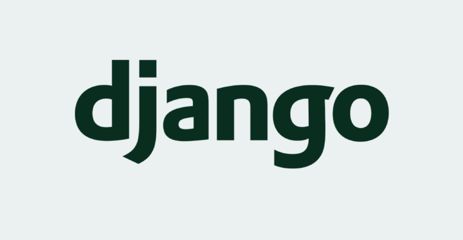

Projet Master 2019/2020 : Implémentation d'un SlideShow d'images avec animation contrôlable
HARRAK Ahmed (MQL)
Carousel en boucle

React.js
bibliothèque JavaScript libre développée par Facebook depuis 2013.
Le but principal de cette bibliothèque est de faciliter la création d'application web monopage,
via la création de composants dépendant d'un état et générant une page (ou portion) HTML à chaque changement d'état.

Vue.js
framework JavaScript open-source utilisé
pour construire des interfaces utilisateur et des applications web monopages.
Vue a été créé par Evan You et est maintenu par lui et
le reste des membres actifs de l'équipe principale travaillant sur le projet et son écosystème.
AngularJS
est un framework JavaScript libre et open source développé par Google.
Il permet de développer des pages web.
JQuery
bibliothèque JavaScript libre et multiplateforme créée pour faciliter
l'écriture de scripts côté client dans le code HTML des pages web.
La première version est lancée en janvier 2006 par John Resig.

Node.js
plateforme logicielle libre en JavaScript orientée vers les applications réseau événementielles
hautement concurrentes
qui doivent pouvoir monter en charge.

BootStrap
collection d'outils utiles à la création du design (graphisme, animation et interactions avec la page dans le navigateur, etc.)
de sites et d'applications web. C'est un ensemble qui contient des codes HTML et CSS, des formulaires, boutons, outils de navigation
et autres éléments interactifs, ainsi que des extensions JavaScript en option.
C'est l'un des projets les plus populaires sur la plate-forme de gestion de développement GitHub.

Spring (framework)
framework open source pour construire et définir l'infrastructure d'une application Java5,
dont il facilite le développement et les tests.

Django
cadre de développement web open source en Python.
Il a pour but de rendre le développement web 2.0 simple et rapide. Pour cette raison,
le projet a pour slogan Le framework pour les perfectionnistes avec des deadlines..
Développé en 2003 pour le journal local de Lawrence (Kansas),
Django a été publié sous licence BSD à partir de juillet 2005.

Apache Struts
framework libre servant au développement d'applications web Java EE. Il utilise et
étend l'API Servlet Java afin d'encourager les développeurs à adopter l'architecture Modèle-Vue-Contrôleur (MVC).

Laravel
framework web open-source écrit en PHP1 respectant le principe modèle-vue-contrôleur et
entièrement développé en programmation orientée objet.
Laravel est distribué sous licence MIT, avec ses sources hébergées sur GitHub.
Carousel Infini

JavaScript
langage de programmation de scripts principalement employé dans les pages web interactives mais aussi
pour les serveurs avec l'utilisation (par exemple) de Node.js. C'est un langage orienté objet à prototype,
c'est-à-dire que les bases du langage et
et ses principales interfaces sont fournies par des objets qui ne sont pas des instances de classes.
JavaScript a été créé en 1995 par Brendan Eich
TypeScript
langage de programmation libre et open source développé par Microsoft qui a pour but d'améliorer et de sécuriser la production de code JavaScript.
C'est un sur-ensemble de JavaScript (c'est-à-dire que tout code JavaScript correct peut être utilisé avec TypeScript). Le code TypeScript est transcompilé en JavaScript,
et peut ainsi être interprété par n'importe quel navigateur web ou moteur JavaScript.

Dart
langage de programmation web développé par Google.
Son but initial est de remplacer JavaScript pour devenir la nouvelle lingua franca
du développement web,
néanmoins la priorité actuelle des développeurs est que le code Dart
puisse être converti en code JavaScript compatible avec tous les navigateurs modernes,
ainsi que sur le développement d'application multi-plateforme

ECMAScript (ES6)
ensemble de normes concernant les langages de programmation de type script et standardisées par Ecma International dans le cadre de la spécification ECMA-262.
Il s'agit donc d'un standard, dont les spécifications sont mises en œuvre dans différents langages de script, comme JavaScript ou ActionScript.
C'est un langage de programmation orienté prototype.
JavaScript Object Notation (JSON)
format de données textuelles dérivé de la notation des objets du langage JavaScript.
Il permet de représenter de l’information structurée comme le permet XML par exemple.
Créé par Douglas Crockford entre 2002 et 2005.
il est actuellement décrit par les deux normes en concurrence : RFC 82593 de l’IETF et ECMA-4044 de l'ECMA.
Des bibliothèques pour le format JSON existent dans la plupart des langages de programmation.

Ajax
une architecture informatique qui permet de construire des applications Web et
des sites web dynamiques interactifs sur le poste client en se servant de différentes technologies ajoutées
aux navigateurs web entre 1995 et 2005.
Ajax est l'acronyme d'asynchronous JavaScript and XML
L'usage d'Ajax fonctionne sur tous les navigateurs Web courants : Google Chrome, Safari, Mozilla Firefox, Internet Explorer, Microsoft Edge, Opera, etc.

Java
langage de programmation orienté objet créé par James Gosling et Patrick Naughton,
employés de Sun Microsystems, avec le soutien de Bill Joy (cofondateur de Sun Microsystems en 1982),
présenté officiellement le 23 mai 1995 au SunWorld.
La société Sun a été ensuite rachetée en 2009 par la société Oracle qui détient et maintient désormais Java.

C++
langage de programmation compilé permettant la programmation sous de multiples paradigmes
(comme la programmation procédurale, orientée objet ou générique). Ses bonnes performances, et sa compatibilité
avec le C en font un des langages de programmation les plus utilisés dans les applications
où la performance est critique.
C#
langage de programmation orientée objet,
commercialisé par Microsoft depuis 20023 et destiné à développer sur la plateforme Microsoft .NET.
Il est dérivé du C++ et très proche du Java dont il reprend la syntaxe générale ainsi que les concepts,
y ajoutant des notions telles que la surcharge des opérateurs, les indexeurs et les délégués.

Python
langage de programmation interprété, multi-paradigme et multiplateformes.
Il favorise la programmation impérative structurée, fonctionnelle et orientée objet.
Il est doté d'un typage dynamique fort,
d'une gestion automatique de la mémoire par ramasse-miettes et d'un système de gestion d'exceptions

Ruby
langage de programmation libre. Il est interprété, orienté objet et multi-paradigme.
Le langage a été standardisé au Japon en 2011 (JIS X 3017:2011),
et en 2012 par l'Organisation internationale de normalisation (ISO 30170:2012)